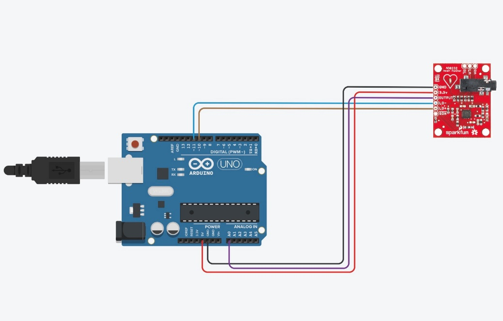
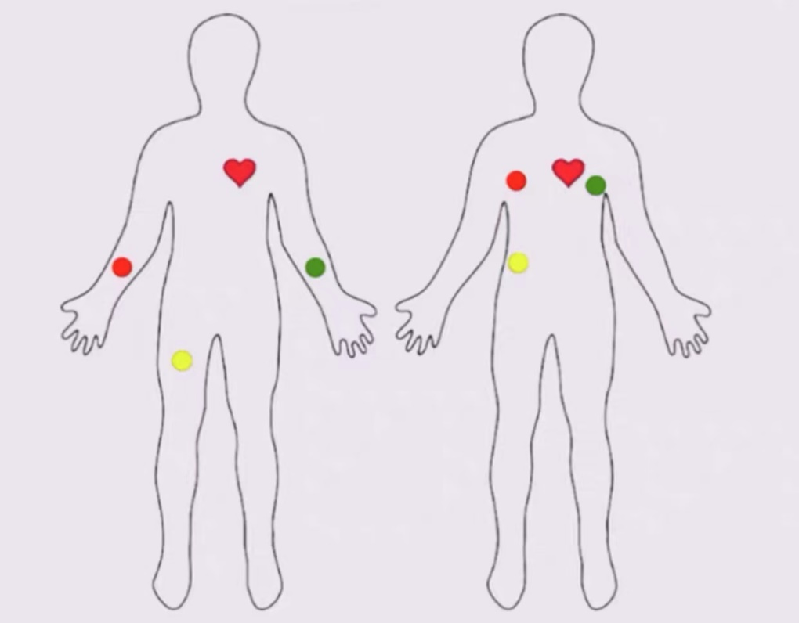

Arduino Input
AD8232 Ecg sensor
1 introduction
Project introduction:
The uno board is connected to the ad8232, and then the electrode is connected to obtain the heart rate through Arduino.
AD832 introduction：
The AD8232 is a single-lead heart rate monitoring front end with integrated front end, which is suitable for heart rate monitoring by signal conditioning of cardiac bioelectrical signals.
The AD8232 uses a double-pole high-pass filter to eliminate moving artifacts and electrode half-cell potentials. The filter is closely integrated with the structure of the instrument amplifier, which can realize single-stage high-gain and high-pass filtering, saving space and cost.
The AD8232 uses a no-use constraint operational amplifier to create a three-pole low-pass filter, eliminating additional noise. Users can choose the cut-off frequency of all filters to meet the needs of different types of applications.
To improve common mode rejection of system line frequencies and other undesirable disturbances, the AD8232 has a built-in amplifier for driven lead applications such as right hand drive (RLD).
The AD8232 includes a fast recovery feature that reduces the long build tail of the high-pass filter.
If there is a signal change in the amplifier rail voltage (such as lead disconnection), the AD8232 automatically adjusts to a higher filter cut-off state. This feature allows the AD8232 to achieve fast recovery so that a valid measurement value can be obtained as soon as possible after the lead is connected to the electrode of the measurement object.
2 Code
void setup() {
// initialize the serial communication:
Serial.begin(9600);
pinMode(10, INPUT); // Setup for leads off detection LO +
pinMode(11, INPUT); // Setup for leads off detection LO -
}
void loop() {
if((digitalRead(10) == 1)||(digitalRead(11) == 1)){
Serial.println('!');
}
else{
// send the value of analog input 0:
Serial.println(analogRead(A0));
}
//Wait for a bit to keep serial data from saturating
delay(1);
}
3 Circuit diagram
4 Physical connection mode
